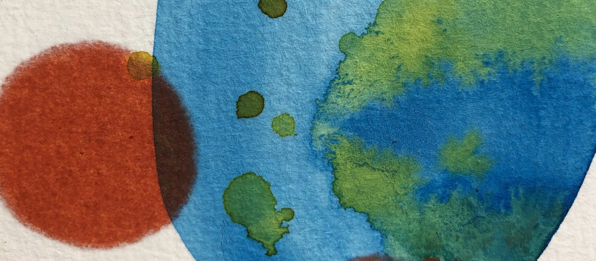
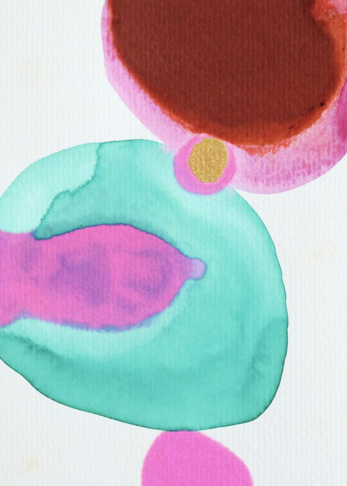
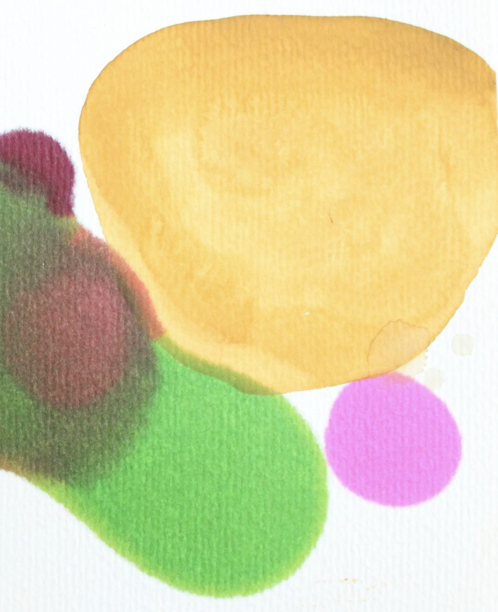
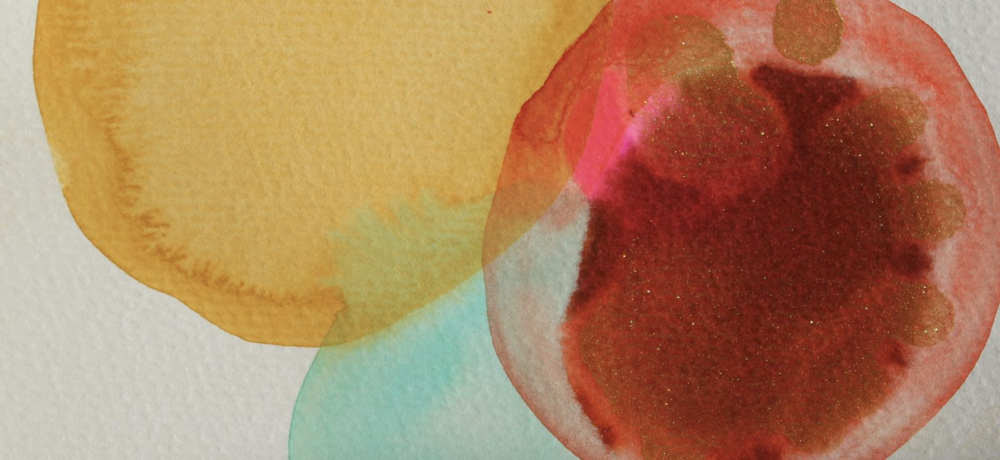
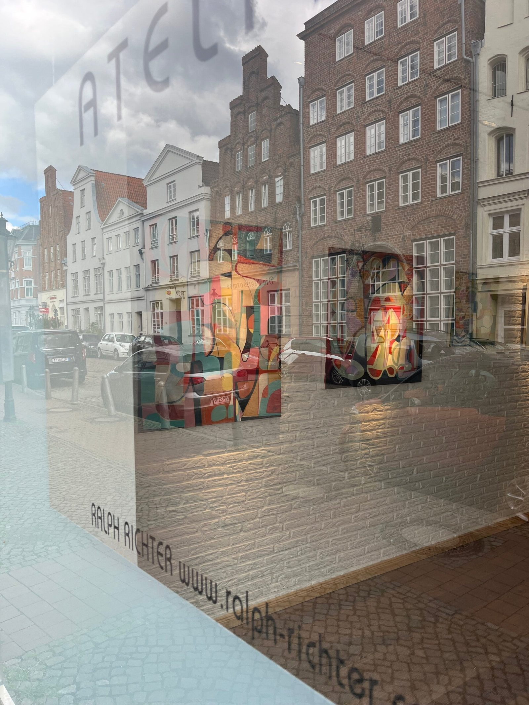
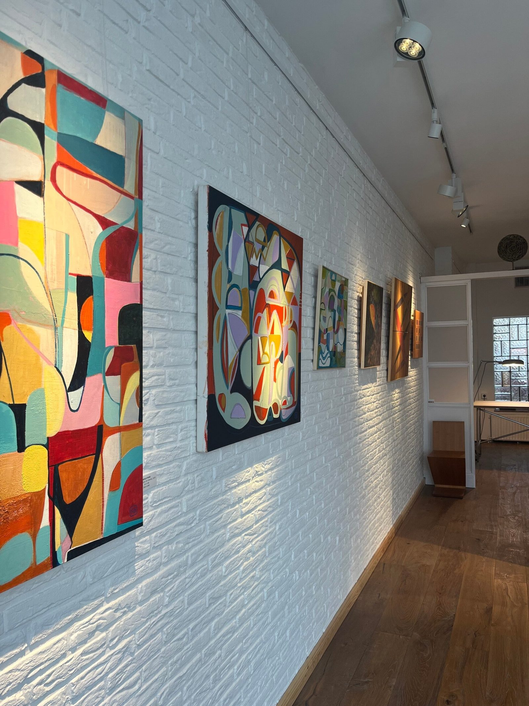
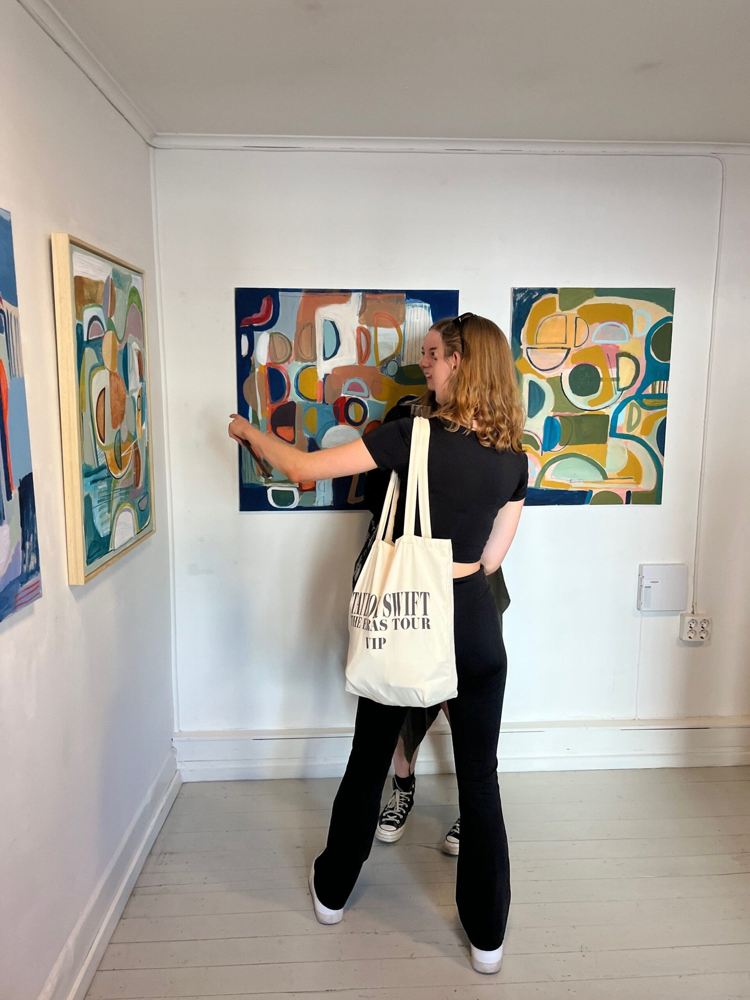
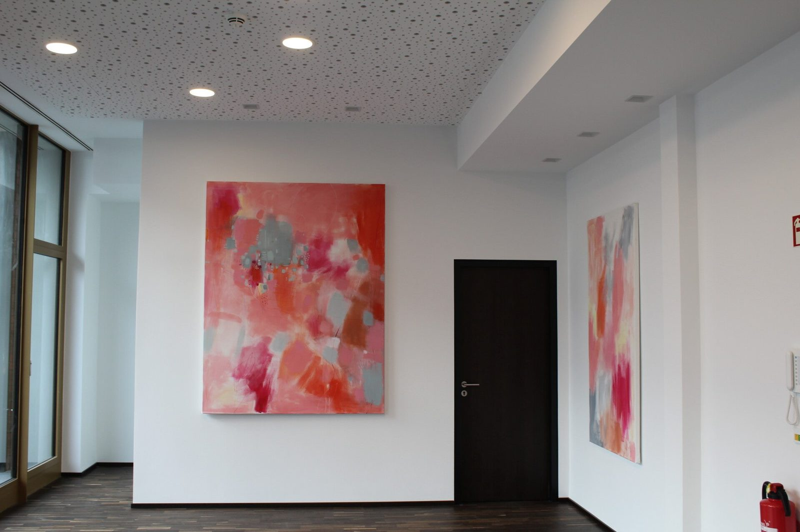

Meine künstlerische Arbeit
Art for Life
Kunst begleitet mich seit vielen Jahren. Sie war der Anfang meines Weges zur Kunsttherapie.
Meine Bilder entstehen meist abstrakt, in Aquarell und Acryl, mit Farben, die ineinanderfließen und sich begegnen. Heute liegt mein therapeutischer Schwerpunkt auf der körperorientierten, traumasensiblen Arbeit. Die Kunst bleibt mein eigener Raum und fließt vor allem in die Gruppenangebote ein.
Mehr Bilder zeige ich auf Instagram und auf meiner Kunstseite.
Werke
Auswahl





Ausstellungen
Wo meine Bilder zu sehen waren
Gruppenausstellungen
- 2026Spurensuche, Kunstraum K70, Lübeck
- 2026Echoes of becoming, Atelier-Galerie Ralph Richter, Lübeck
- 2025Creative Citizen Dialogue, Galleri Chapman, Karlskrona
- 2025Begegnungen, Kunstraum K70, Lübeck
- 2021Divulgarti Arte Italiana, Palazzo Divulgarti, Genua
- 2019Little Treasures, Galerie di Marchi, Bologna
- 2015Gallery Oliver Widmann, Oelkersallee, Hamburg
Einzelausstellungen
- 2021Art For Life, Moritz Consulting, Potsdam
- 2020Abstraktes, Galerie Cavissamba, Haselau
- 2020Momente in Abstrakt, Elbmarschenhaus, Haseldorf
- 2019SEIN, Kulturbotschaft, Hamburg
- 2018Art For Life, VHS Halstenbek
Impressionen
Aus Ausstellungen

Lübeck 
Galeriewand 
Beim Hängen 
Ausstellungsraum